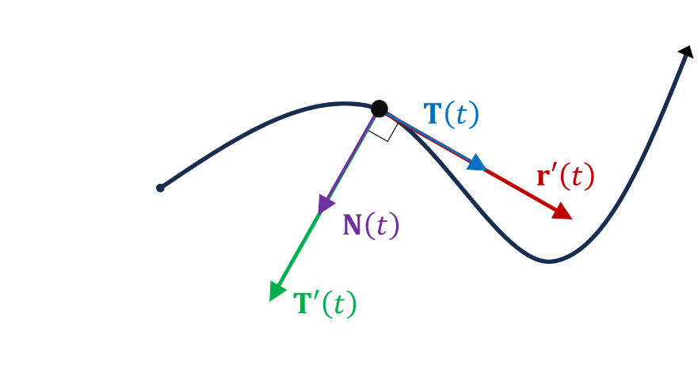

Lesson 9: Principal Unit Normal Vector
We need to show that \(\mathbf{T}(t)\) and \(\mathbf{T}'(t)\) are orthogonal.
Consider the magnitude property of the dot product, applied to the unit tangent vector.
The unit tangent vector is a unit vector, \(\|\mathbf{T}(t)\| = 1\), because it is defined by normalizing \(\mathbf{r}'(t)\).
Next, differentiate both sides, using the dot product rule.
Because the dot product of \(\mathbf{T}'(t)\) and \(\mathbf{T}(t)\) is zero, these two vectors are orthogonal!
The principal unit normal vector is denoted as \(\mathbf{N}(t)\) and defined below, provided \(\mathbf{T}'(t) \neq \mathbf{0}\).
Principal Unit Normal Vector

- The principal unit normal vector is the normalization of \(\mathbf{T}'(t)\). For this reason, it has the same direction as \(\mathbf{T}'(t)\), but has a magnitude of one.
- We just demonstrated that \(\mathbf{T}'(t)\) is orthogonal to \(\mathbf{T}(t)\). This means \(\mathbf{N}(t)\) is also orthogonal to \(\mathbf{T}(t)\). The unit tangent vector and the principal unit normal vector are orthogonal!
- The vectors \(\mathbf{r}'(t)\) and \(\mathbf{T}(t)\) are parallel. They are tangent to the curve. \(\mathbf{N}(t)\) is orthogonal to these vectors.
An Example
Given the below vector-valued function, find \(\mathbf{N}(t)\).
First find the unit tangent vector, \(\mathbf{T}(t)\).
Then differentiate \(\mathbf{T}(t)\), and normalize the result.